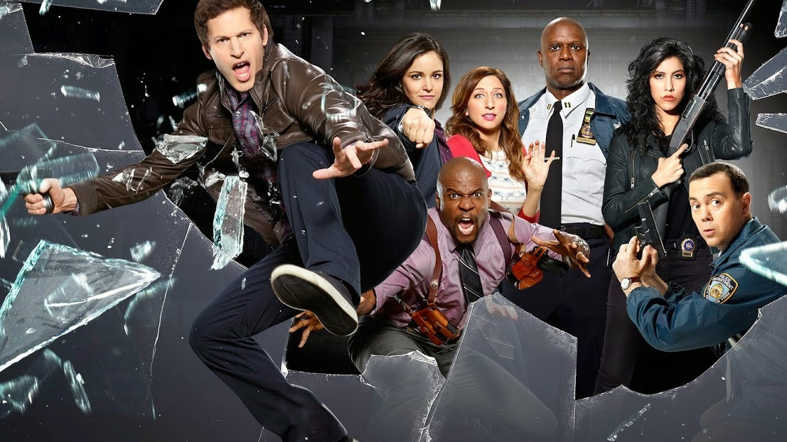
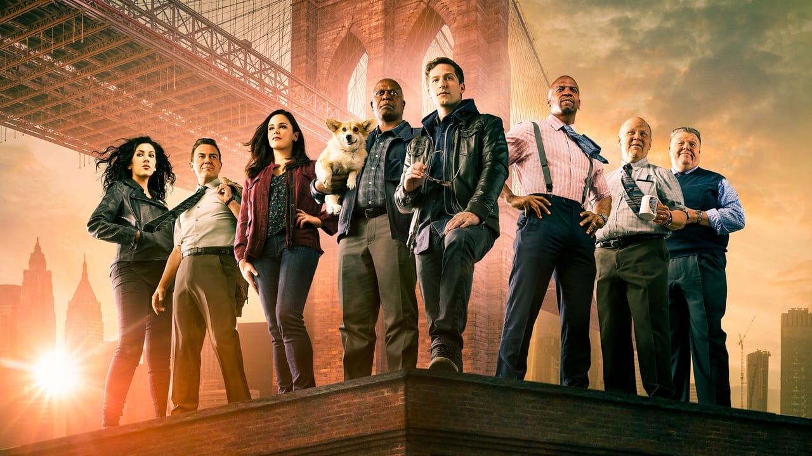
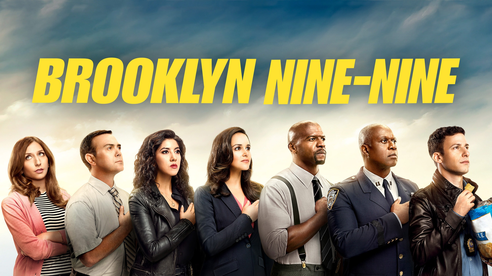
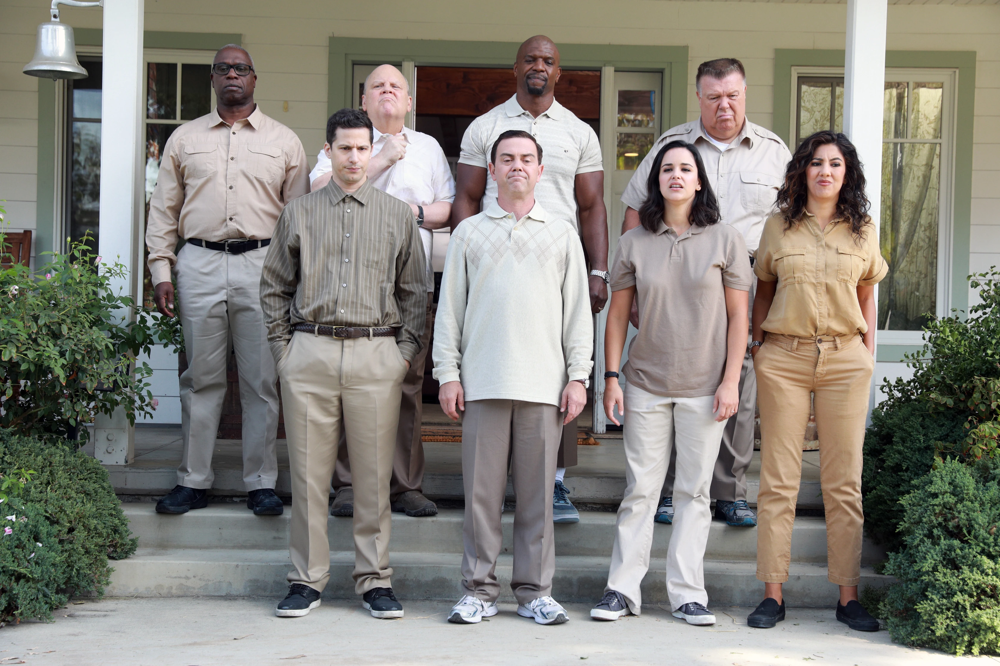
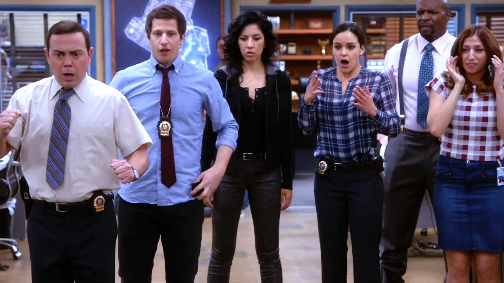
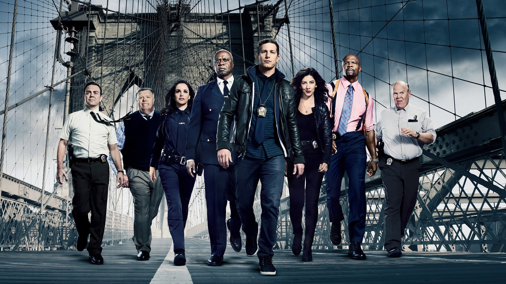
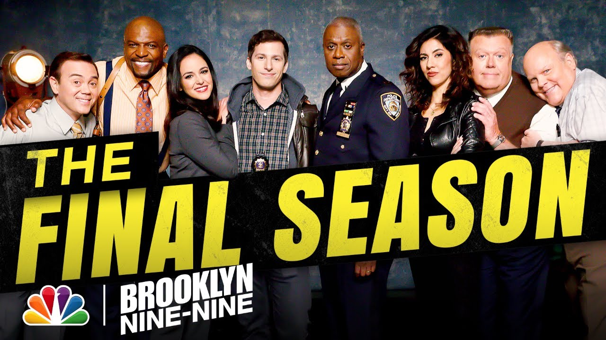

Temporada 1
La temporada 1 de Brooklyn Nine-Nine sigue al detective Jake Peralta y su equipo en la comisaría 99 de Brooklyn. Jake, carismático y travieso, trabaja bajo el estricto Capitán Holt, mientras interactúa con sus compañeros: la ambiciosa Amy, la ruda Rosa, y el sensible Terry. A lo largo de la temporada, resuelven casos mientras desarrollan sus relaciones personales, creando un equilibrio entre comedia absurda y momentos más profundos. La serie destaca por su humor, personajes entrañables y su estilo único.

Temporada 2
La temporada 2 de Brooklyn Nine-Nine continúa las aventuras del equipo en la comisaría 99. Jake y Amy empiezan una relación romántica, mientras Jake enfrenta la presión de equilibrar su vida profesional y personal. Holt enfrenta desafíos en su carrera y la comisaría se ve envuelta en situaciones aún más cómicas, con casos policiales y conflictos internos. Además, el equipo sigue desarrollando sus relaciones personales y profesionales, especialmente con Gina y Terry. La temporada mantiene el humor característico, con más interacción entre los personajes y nuevos desafíos.
Temporada 3
En la temporada 3 de Brooklyn Nine-Nine, Jake y Amy enfrentan nuevas pruebas en su relación mientras trabajan juntos en la comisaría 99. Jake se dedica a resolver el caso del "Viento Frío", un criminal que acecha la ciudad, mientras que Amy busca avanzar en su carrera. Holt, ahora promovido a un puesto más alto, enfrenta dificultades al adaptarse a su nuevo rol. Además, Rosa y Terry tienen sus propias luchas personales. La temporada sigue mezclando comedia y momentos de desarrollo personal, con el equipo enfrentando tanto situaciones laborales como personales, manteniendo el tono humorístico y las dinámicas entrañables entre los personajes.
Temporada 4
En la temporada 4 de Brooklyn Nine-Nine, Jake regresa de su luna de miel con Amy y se enfrenta a nuevos desafíos, incluyendo una importante misión encubierta. Mientras tanto, la relación entre Jake y Amy evoluciona, y ambos enfrentan retos en su vida profesional y personal. Holt sigue en su nuevo puesto, buscando mantener el control de la comisaría, mientras que Terry, Rosa y Gina también exploran sus propias vivencias. La temporada sigue con un tono cómico y situaciones absurdas, pero también profundiza en el crecimiento de los personajes y sus dinámicas de equipo.
Temporada 5
En la temporada 5 de Brooklyn Nine-Nine, el equipo enfrenta varios cambios, incluyendo la llegada de un nuevo capitán, el estricto y excéntrico Capitán Holt, quien se encarga de la comisaría 99 tras el despido de su antecesor. Jake y Amy continúan su relación y planean su boda, mientras que el resto del equipo también enfrenta desafíos personales y profesionales. A lo largo de la temporada, se resuelven casos importantes y se profundiza en el desarrollo de los personajes, todo mientras se mantiene el estilo cómico y absurdo que caracteriza la serie.
Temporada 6
En la temporada 6 de Brooklyn Nine-Nine, la comisaría 99 se enfrenta a nuevos desafíos, como la llegada de un nuevo jefe y un cambio en su estructura. Jake y Amy, ahora casados, navegan las complicaciones de su vida personal y profesional. Holt sigue lidiando con la política del departamento, mientras que Rosa, Terry y Gina también tienen sus propios arcos. La temporada se enfoca en mantener el humor y la dinámica del equipo, además de explorar temas como la lealtad, el trabajo en equipo y las relaciones personales, todo mientras resuelven casos y enfrentan situaciones absurdas.
Temporada 7
En la temporada 7 de Brooklyn Nine-Nine, Jake y Amy enfrentan nuevos retos en su vida personal y profesional, con Jake buscando avanzar en su carrera y Amy lidiando con su deseo de ser madre. Holt y el resto del equipo también se adaptan a cambios dentro de la comisaría, mientras que los casos siguen siendo resueltos con el característico humor de la serie. La temporada profundiza en las relaciones dentro del equipo, mientras que Jake y Amy exploran nuevos roles y responsabilidades. Además, se abordan temas de familia, trabajo y el balance entre ambos.
Temporada 8
La temporada 8 de Brooklyn Nine-Nine sigue al equipo enfrentando cambios importantes, incluyendo la renuncia de Jake para ser un mejor padre. Holt y Amy trabajan en una reforma policial mientras la comisaría lidia con recortes presupuestarios. Rosa deja la policía y se convierte en investigadora privada. La serie mantiene su humor característico, pero aborda temas más serios como la brutalidad policial. El final cierra con una última broma del equipo y su tradicional "Halloween Heist".
